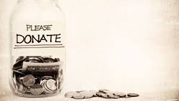
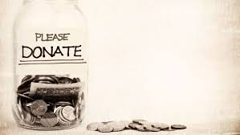

Donate For a Bright Future
Donating to the causes you care about not only benefits the charities themselves, it can be deeply rewarding for you too. Millions of people give to charity on a regular basis to support causes they believe in, as well as for the positive effect it has on their own lives.
In this Pandemic Times , Many people lost their families and deeply in trouble.By just donating a minimum sum of rupees you will make a big help to many people who are waiting for the helping hands.Please try to donate.
With the amount you donated we will help the people in need by giving them food, shelter and education for poor children.